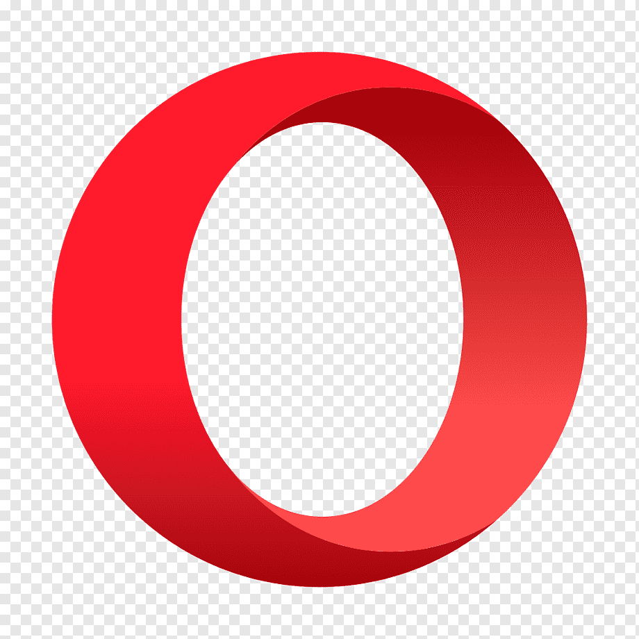

Most Popular Browsers
Google Chrome

short information
Google Chrome is a web browser developed by Google, released in 2008. Chrome is the world's most popular web browser today!Most of Chrome's source code comes from Google's free and open-source software project Chromium, but Chrome is licensed as proprietary freeware.WebKit the original rendering engine, but Google eventually forked it to create the Blink engine;all Chrome variants except iOS used Blink as of 2017.
Mozilla FireFox

short information
Mozilla Firefox is an open-source web browser developed by Mozilla. Firefox has been the second most popular web browser since January, 2018.Firefox was created in 2002 under the code name "Phoenix" by members of the Mozilla community who desired a standalone browser rather than the Mozilla Application Suite bundle.
Microsoft Edge
short information
Microsoft Edge is a web browser developed by Microsoft, released in 2015. Microsoft Edge replaced Internet Explorer.Edge was initially built with Microsoft's own proprietary browser engine, EdgeHTML, and their Chakra JavaScript engine.[14] In late 2018, it was announced that Edge would be completely rebuilt as a Chromium-based[15][16] browser with Blink and V8 engines.
Safari

short information
Safari is a web browser developed by AppleSafari was introduced in Mac OS X Panther in January 2003.Safari was introduced in Mac OS X Panther in January 2003. It was included with the iPhone since the latter's first generation, which came out in 2007. At that time, Safari was the fastest browser on the Mac. Between 2007 and 2012, Apple maintained a Windows version,but abandoned it due to low market share. In 2010, Safari 5 introduced a reader mode, extensions, and developer tools.
Opera
short information
Opera is a multi-platform web browser developed by its namesake company Opera.The browser is based on Chromium, but distinguishes itself from other Chromium-based browsers (Chrome, Edge, etc.) through its user interface and other features.
Tor
short information
Tor, short for "The Onion Router,is free and open-source software for enabling anonymous communication. It directs Internet traffic via a free, worldwide, volunteer overlay network that consists of more than seven thousand relays.
Vivaldi

short information
Vivaldi is a freeware,cross-platform web browser with a built-in email client developed by Vivaldi Technologies.Vivaldi was officially launched on April 6, 2016Although intended for general users, it is first and foremost targeted towards technically-inclined users as well as former Opera users disgruntled by its transition from the Presto layout engine to a Chromium-based browser that resulted in the loss of many of its iconic features.